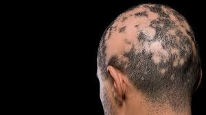

Alopecia in Africa.

Author
Khadijat Taiwo
Date
June 7, 2022
Category
Health
Because of the typical African mentality of associating spirituality with every of her inexplicable situations or circumstances, a Nigerian bride to - be took her own life, seven days to her wedding day.
Omashola was a beautiful young lady hoping to get married to the love of her life. Unknown to the groom nor anyone else in her life - not even her mother or her sister with whom she shares all of her secrets - Omashola has been dealing with hair loss for over 10 months. Hair loss sometime can be normal, they may grow back with time. In Nigeria, we believe one has to shed some hair to give room for more growth.
At first, it was normal hair loss, it will grow back. But no, it was getting worse by the weeks. Thank goodness for wigs, they were saving Oma's butt and helping her keep her embarrassing secret, from her fiancee especially.
There is this popular black women slogan, "hair is the beauty of a woman." kunle, Oma's fiancee, loves black thick Afro hair on a black woman and loves the regular local all back simple hairstyle that the cutting comb has cut beautifully and clearly, showing the brown skinned scalp.
They day Kunle was going to find out about Oma's secret, it was exactly a week to their big day. There was already 3 missed calls from kunle on Oma's phone, she was in the showers singing along to the song that was playing on the stereo, too loud for her to hear her phone ring. Since Oma wasn't picking her call, Kunle thought to drop by and explain some things the event planner had brought to his notice about the venue of their wedding, earlier that morning.
Oma was already in her bedroom dressing up, she sighted her patched, rough, half bald head in the mirror and she quickly ran into depression. Kunle barged in on her, she might have forgotten to lock the door earlier. Sighting Oma's patched head, he almost fainted, he was scared and dumbfounded, he rushed out of the room.
Oma was mad at herself, how could she have let this happen.
Kunle cut off the wedding.
Oma pleaded with Kunle, she explained the level of insecurity she's had and how she's been embarrassed to talk to him about it. But nothing was going to change his mind, he had discussed the issue with his mum and siblings and they've all agreed Oma was a witch that has used her hair as sacrifice in her cult. Typical right?
There was so much tension between the two families. It is such a embarrassing thing for Oma's family, their daughters fiancee breaking up with her, few days to their wedding. It was a bad omen in any Nigerian culture.
Oma was in her widowed mother's home weeping. Her sister was weeping for her and consoling her at the same time. That was the saddest day of her mum's life.
Oma wasn't a witch, her mum knew he daughter a good Christian child. But what happened to her hair? Even her septogenarian mum still has all of her dark beautiful afro hair intact.
Apparently none of them know about ALOPECIA.
There was so much plea from the bride - to - be's family to the groom-to-be's but nothing positive was forthcoming. Looked like they were hell bent on not making a WITCH a wife.
The shame was too much for Oma, she couldn't bear it, it was too much. She may never be able to get a man that'd marry her. She may never be able to look herself in the mirror. She may never have that confidence. Her self esteem has been crushed. Oh! Poor Oma.
She committed suicide after realizing her life could only get worse from here.
WHAT IS ALOPECIA
Alopecia is hair loss from the scalp or elsewhere on the body. A sudden hair loss that starts with one or more circular bald patches that may overlap, then becoming more noticeable. According to MediHair, the percentage of clients reporting Alopecia in their families in 2020 - 2021 is 70.5%. Number of respondents across the world is 1,063.
Alopecia is no respcter of gender, race or age. It happens to men and women alike - Black, White, Asian, Caucasian, Hispanic - elderly, Adults and children. However, typical onset is between 25 - 36 years of age.
According to a 2020 study based on analysis of over 1000 cases in the Nation Alopecia Areata Registry (NAAR) between 2000 and 2016. The approximate ratio of alopecia diagnosis with white people as the comparison group are as follows :
- 1.77 for African American.
- 1.27 for other races, including native Americans and Pacific islanders.
- 1 for white people.
- 0.9 for Hispanic.
- 0.4 for Asians.
Apparently, Oma wasn't alone, if only she knew. Her lack of information took the best of her situation. Alopecia isn't a death sentence.
WHAT CAUSES ALOPECIA?

There is no single cause of alopecia. However, it's is born out of many factors.
- Heredity.
- Hormonal change.
- Medical conditions.
- Normal part of aging
- Stress : it may cause the immune system to attack the hair follicle, resulting in hair loss.
WHAT ARE THE TREATMENTS?
- Minoxide (Rogaine) : Has OTC availability. Rubbing this medication into the scalp to help stimulate hair growth. It takes about 4 - 6 months Or longer to see results.
- Anthracite : It is a drug that irritates the skid to spur hair growth.
- Corticosteroids : creams such as clobetasol are ointments that works by decreasing inflammation in the hair follicle.
- Topical immunotherapy : this system boosts the immune system to help the body fight the condition.
- Washing the hair at least 3 times a week with African black soap or with gentle shampoo or baby shampoo.
- Apply more natural moisturizer like shea butter mixed with coconut oil as a leave - in conditioner.
- As important as it is to use good hair wash and conditioner, it is also pertinent to take in health food / meal. Our health and overall development depends largely on what we take in. Food that are rich in Vitamin D helps hair growth. Endeavor should be made to include at least one of these following food / fruit into our daily meal.
- Cow milk.
- Fura.
- Egg and egg yolk.
- Yogurts.
- Cod liver oil.
- Orange juice.
- Oily fish.
- Cereal: oat meal, golden morn.
- Cheese.
- Soya milk.
- Sardine.
Even though there are millions of cases of Alopecia in the world right now, I believe more awareness programs are needed - targeting far remote places, especially in Africa, to save more people like Omashola.
People talk about self care, self love, high self esteem. None of that is attainable with patched head all up in your face every time you look in the mirror. Or the thought of your bald head In the middle of a "mad fun" get-away with friends. Self esteem will run low to a negative - SOS situation.
Thank goodness for the recent show of shame created by Will Smith by slapping Chris Rocks on national TV (I'm not for violence at all but there's a positive side to the madness) for making jokes about his wife's alopecia. It became the biggest Alopecia awareness in the world, reaching new millions of high and low class people. To my surprise, many high class / celebrity do not know about the condition and had initially thought Jada Smith went bald because she wanted to go bald.
Jada had been creating alopecia awareness among her fans. She had come out to share informations about this condition and why she decided to barber all of her hair.
Like every other physical health issues (such as weight gain, vitiligo) people living with alopecia needs love, care and understanding. Maybe in our family, maybe a colleague, maybe a friend, a neighbor. We all owe one another some kindness.